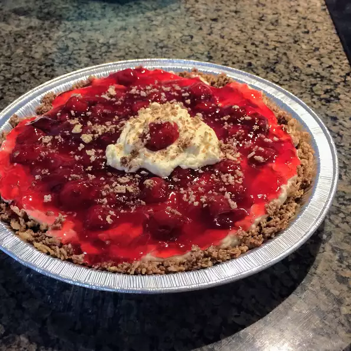

Strawberry Cream Pie

Description
Family recipe for a Strawberry Cream Pie
Ingredients
- 1 quart strawberries, sliced
- 1 (4 ounce) package cream cheese, softened
- ½ cup confectioners' sugar
- 1 teaspoon vanilla extract
- 1 cup heavy whipping cream
- ¼ teaspoon ground cinnamon
- 1 cup heavy whipping cream
- 1 (9 inch) baked pie crust
Steps
- Stir strawberries with glaze in a bowl and place in refrigerator to chill. Stir cream
cheese, confectioners' sugar, cinnamon, and vanilla extract together in a bowl.
- Beat cream in a separate bowl with an electric mixer just until it begins to thicken;
add cream cheese mixture and continue beating until thick. Pour cream mixture into
baked pie crust; top with strawberry mixture. Chill at least 1 hour before serving.